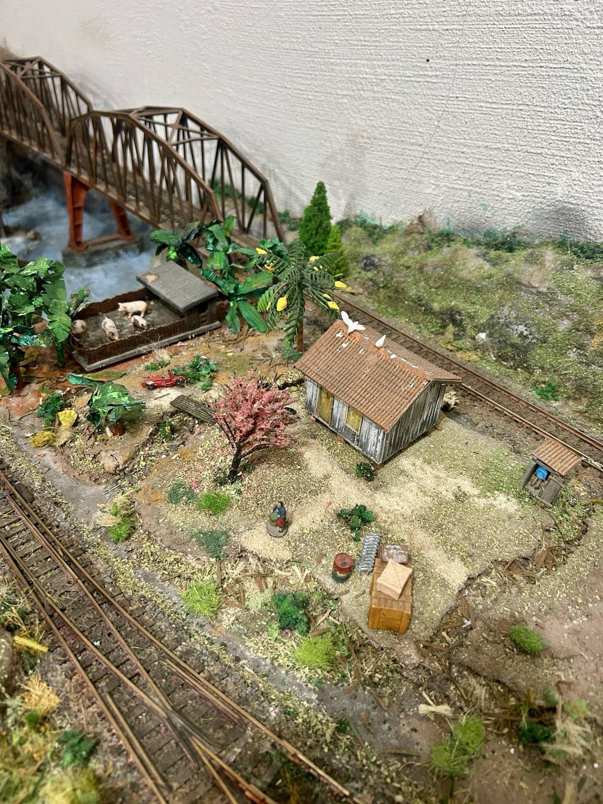

Casa simples com banheiro externo

Este cenário reproduz um pequeno recanto rural, simples e cheio de detalhes que ajudam a dar vida à ferrovia.
Ao centro, uma casa modesta, com um pequeno banheiro do lado direito. Quem observar a cena com bastante atenção — ou der um bom zoom na fotografia — encontrará um detalhe bem-humorado: há alguém usando o banheiro e fazendo xixi.
No telhado da casa, dois pombos parecem fazer uma verdadeira algazarra, acrescentando mais um pequeno elemento de movimento e descontração à cena.
À esquerda fica o chiqueiro, com alguns porcos sobre um piso propositalmente muito sujo, procurando reproduzir o aspecto rústico e pouco cuidado que normalmente encontramos nesse tipo de instalação rural.
Para completar o ambiente, foram acrescentados um pequeno bananal, árvores, grama e diversas moitas. A combinação desses elementos com o terreno irregular, os trilhos e a proximidade das pontes cria uma transição natural entre a área rural e o restante da ferrovia.
Na parede ao fundo será fixada uma imagem de uma cidade histórica de Minas Gerais com montanhas, céu azul e muitas nuvens. Esta imagem pode ser vista na capa deste site.
São justamente esses pequenos detalhes — alguns facilmente percebidos e outros quase escondidos — que tornam a observação da maquete mais divertida e convidam o visitante a olhar cada cena com mais atenção.